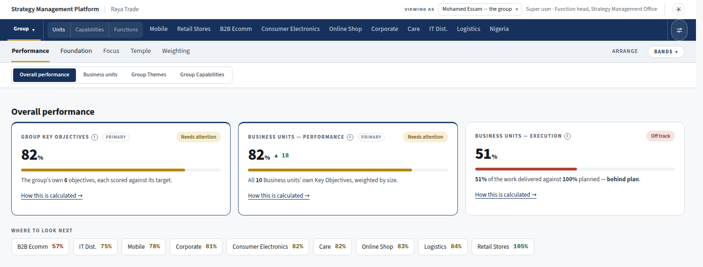
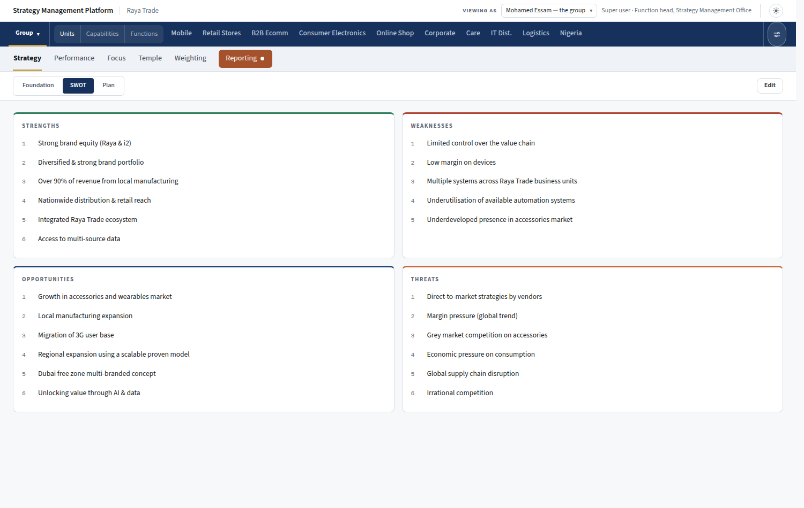
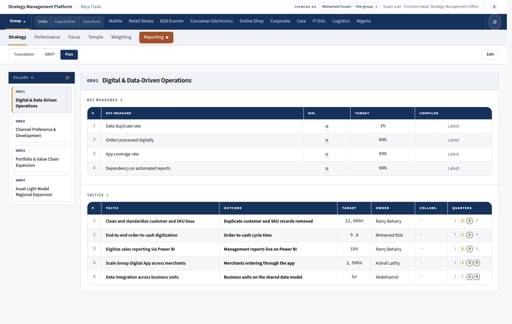
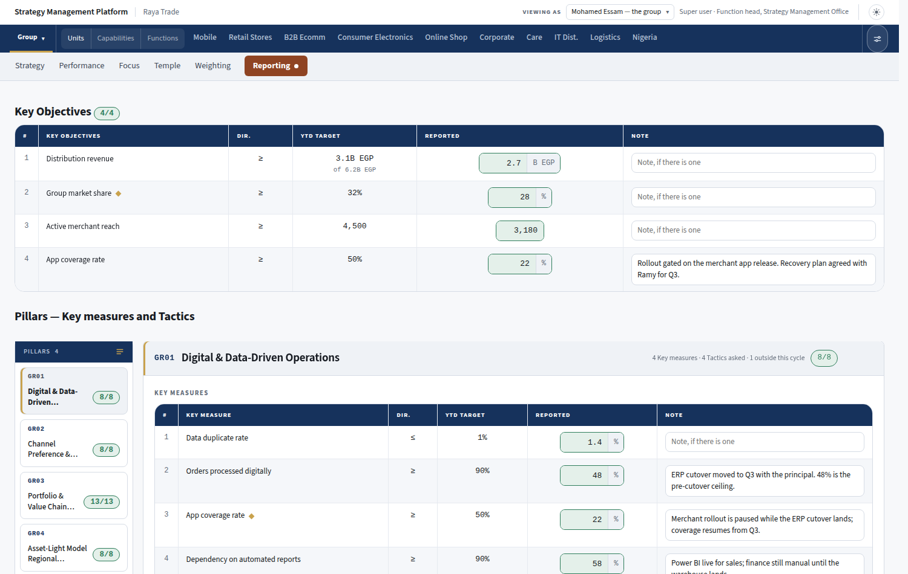
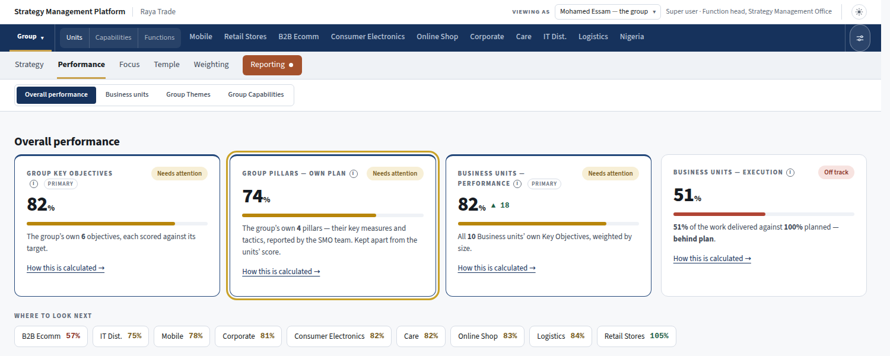
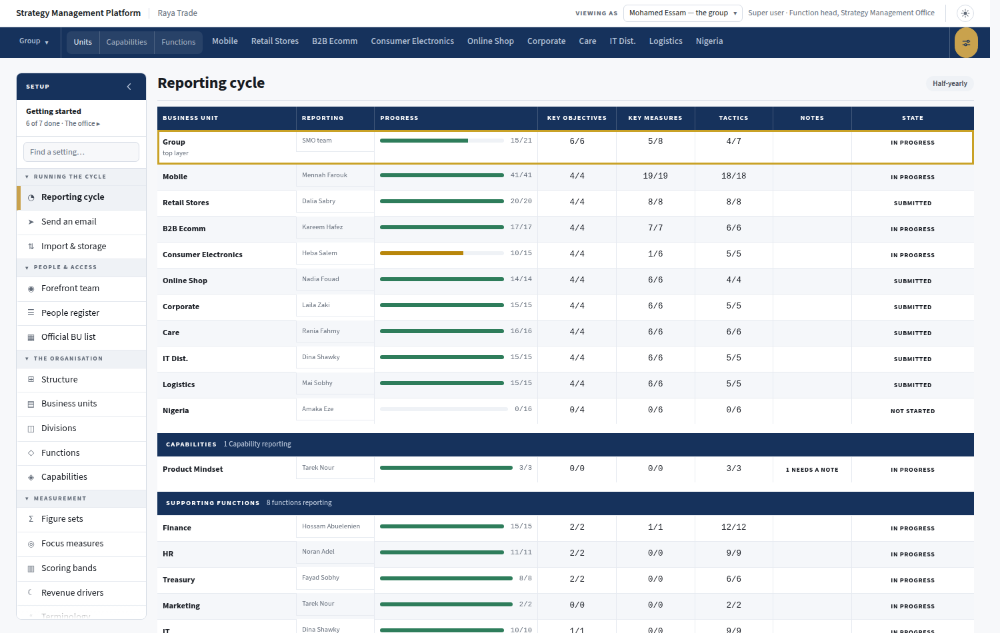
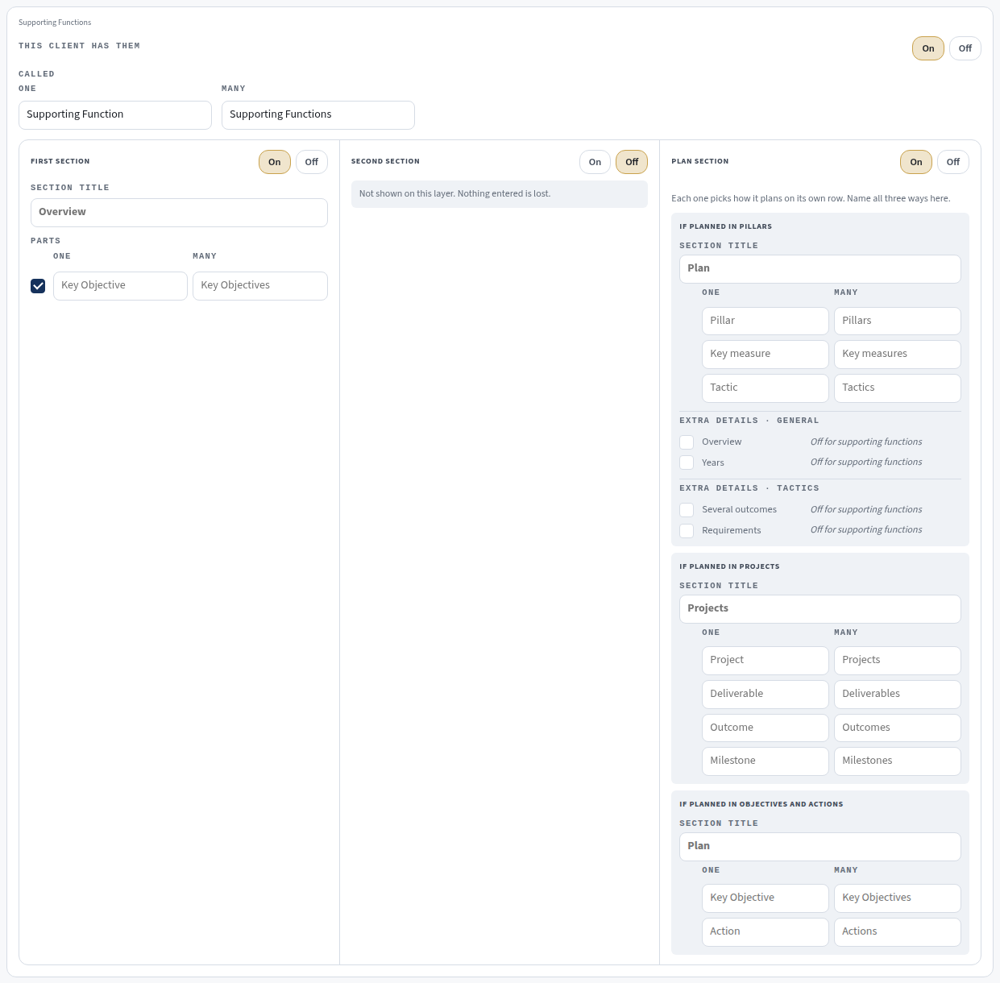
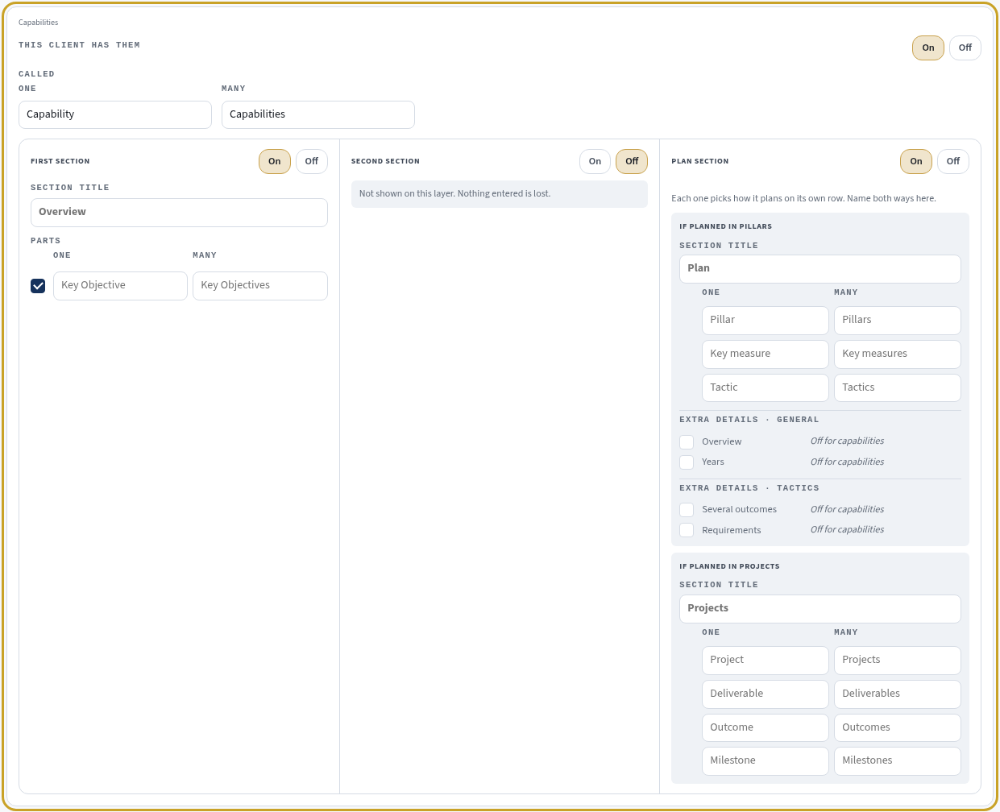
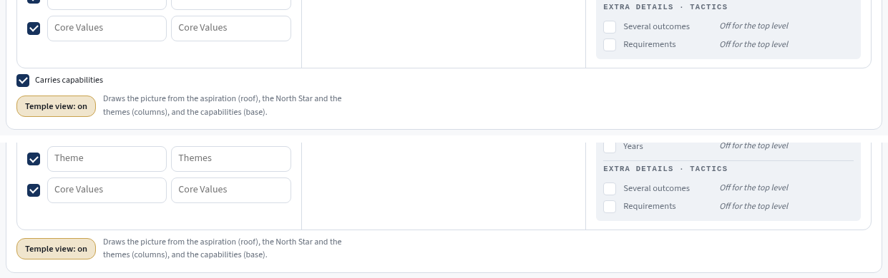

Shot from the running platform, with the new parts laid in. The content is the demo's own words used as a stand-in; the gold outline marks what is new. The top layer shows here under its client word, Group.
The top layer's row of tabs gains Strategy at the front and an orange Reporting at the end — the same two a business unit has. Focus, Temple and Weighting stay where they are. Inside Strategy: Foundation, SWOT and Plan. The SWOT is four boxes about the whole top layer, one slide in its deck.


The same page a business unit plans on, and pillars only. The SMO team writes it; nobody else holds the pen.

The SMO team and the top layer's CEO enter the figures and press Submit. Same boxes, same notes rule, same Submit rule as a unit.

A new card sits after the top layer's key objectives. Every number that is on this page today stays exactly as it is.

The office sees whether the top layer has reported, first on the list, the same way it sees every unit.

Before today's slides, the top layer's own: its SWOT, then per pillar the key measures and the tactics — built by the same slide builder a unit's deck uses.
A fifth card after Supporting Functions, with the same three sections. A capability plans in pillars or in projects, so its plan section names those two ways only. Until somebody changes it, the card holds exactly what the functions' card holds today — nothing moves for any client.


And the Carries capabilities tick goes from the top layer, second layer and business units cards, since the card now answers it.
